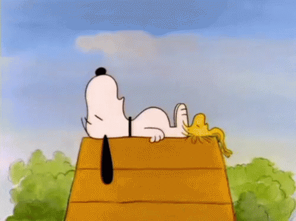

Snoopy é o famoso beagle de estimação de Charlie Brown na tira em quadrinhos Peanuts, criada por Charles Schulz. Ele é conhecido por sua imaginação fértil, suas aventuras fantásticas no telhado da casinha e por ser um personagem cativante e divertido. Snoopy também é um escritor, um jogador de beisebol e um amigo leal de Charlie Brown, com quem vive diversas aventuras e desafios.
Snoopy aparece pela primeira vez em 4 de Outubro de 1950. Embora a primeira tirinha tenha sido apresentada em 2 de outubro do mesmo ano. Schulz originalmente ia chamar o cão de "Sniffy", até que descobriu que esse nome já era usado em outra tirinha . Snoopy foi durante dois anos uma figura silenciosa, agindo como um cão real (caminhava sobre as quatro patas), mas, em 19 de Outubro de 1952, ele verbalizou os seus pensamentos aos leitores pela primeira vez através de balões; Snoopy tinha também a capacidade de entender tudo o que as restantes personagens dos Peanuts, com quem interagia, diziam. Schulz, após esta data, passou a incluir essas características na sua banda desenhada. Snoopy é um cão extrovertido com complexo de Walter Mitty, com muitas virtudes. A maior parte delas não são reais, mas sonhos que fazem parte do seu mundo de fantasia, que aparecem quando Snoopy dorme no telhado da sua casota. Veja mais sobre: